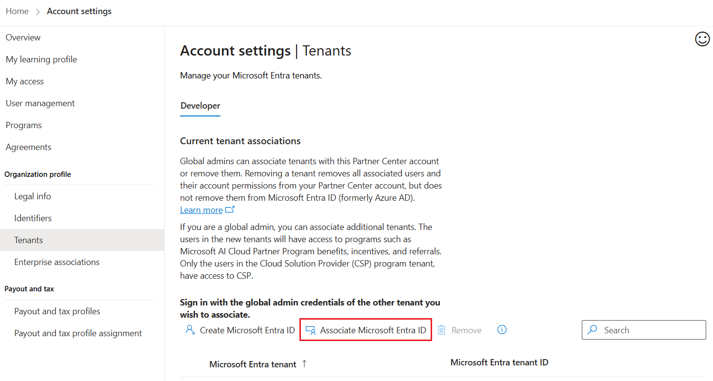
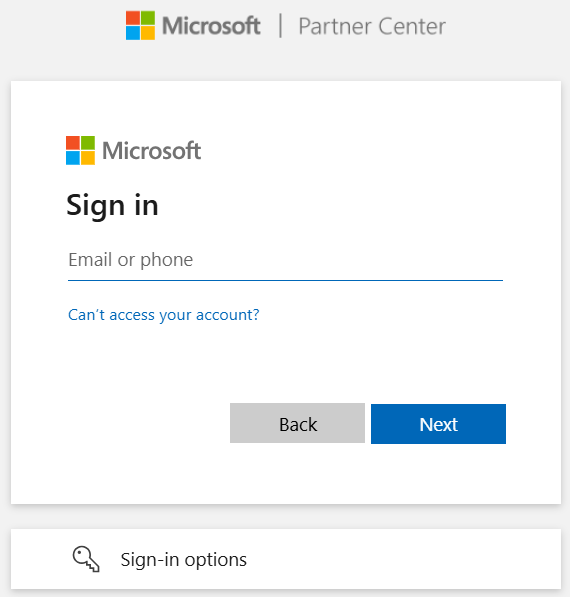
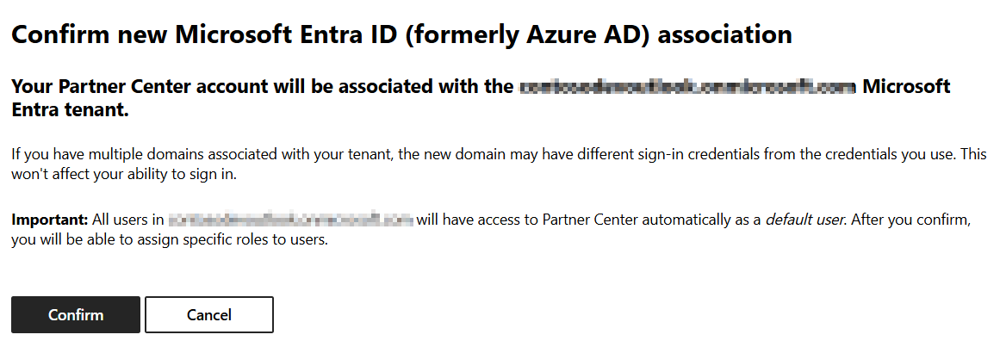
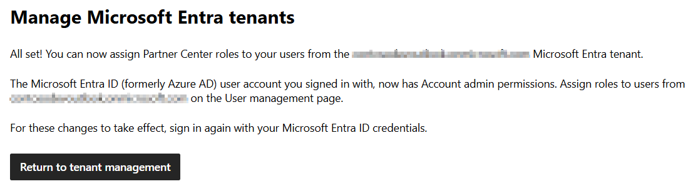

Associate an existing Microsoft Entra ID tenant in Partner Center
In order to add and manage account users, you must first associate your Partner Center account with your organization's Microsoft Entra ID.
Partner Center leverages Microsoft Entra ID for multi-user account access and management. If your organization already uses Microsoft 365 or other business services from Microsoft, you already have Microsoft Entra ID. Otherwise, you can create a new Microsoft Entra ID tenant from within Partner Center at no additional charge.
If your organization already uses Microsoft Entra ID, follow these steps to link your Partner Center account.
From Partner Center, select the gear icon (near the upper right corner of the dashboard) and then select Account settings. In the Settings menu, select Tenants.


Select Associate Microsoft Entra ID with your Partner Center account.

On the Microsoft Partner Center sign in page, enter the Microsoft Entra ID credentials for the tenant that you want to associate.

Review the domain name for your Microsoft Entra ID tenant. To complete the association, select Confirm.

If the association is successful, you will then be ready to add and manage account users in the User management section in Partner Center.

Important
In order to create new users, or make other changes to your Microsoft Entra ID, you’ll need to sign in to that Microsoft Entra ID tenant using an account which has global administrator permission for that tenant. However, you don’t need global administrator permission in order to associate the tenant, or to add users who already exist in that tenant to your Partner Center account.
To add and manage Partner Center account users in your tenant, sign in to Partner Center as a user in the same tenant who has the Manager role.
Note
Any user who has the Manager role for a Partner Center account can associate Microsoft Entra ID tenants with the account.
Tip
To refer to common questions, please refer to Frequently Asked Questions section
You can associate multiple Microsoft Entra ID tenants to a single Partner Center account. To associate a new tenant, select Associate another Microsoft Entra ID tenant, then follow the steps indicated above. Note that you will be prompted for your credentials in the Microsoft Entra ID tenant that you want to associate.